CODING AGENTS AS PIXEL WORLD MODELS
traex/DeepSeek-V4.1-Flash · phygen_140
点击播放 · 原生 RGB 像素
逐轮保存的候选
回放视频、检查图与代码变化。
每份候选均可单独播放。实际图片检查记录在下方工具轨迹中。
候选 01播放与检查图
点击播放 · 原生 RGB 像素
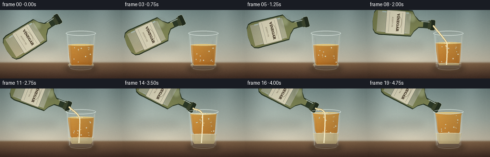
展开代码变化
--- 上一保存版本
+++ 本次保存版本
@@ -0,0 +1,545 @@
+from pathlib import Path
+import math
+
+import numpy as np
+from PIL import Image, ImageDraw, ImageFilter, ImageFont
+
+import artifact_io
+
+
+CASE_DIR = Path(__file__).resolve().parent
+WIDTH, HEIGHT, FRAME_COUNT, FPS = 256, 144, 20, 4.0
+SS = 4
+W, H = WIDTH * SS, HEIGHT * SS
+
+
+def px(value):
+ return int(round(value * SS))
+
+
+def rgba(color):
+ if len(color) == 4:
+ return color
+ return (*color, 255)
+
+
+def smoothstep(value):
+ value = min(1.0, max(0.0, value))
+ return value * value * (3.0 - 2.0 * value)
+
+
+def lerp(a, b, amount):
+ return a + (b - a) * amount
+
+
+def vertical_gradient(width, height, stops, horizontal_light=False):
+ """Create a smooth RGB gradient with color stops as (position, rgb)."""
+ ys = np.linspace(0.0, 1.0, height)
+ positions = np.array([stop[0] for stop in stops])
+ colors = np.array([stop[1] for stop in stops], dtype=np.float32)
+ output = np.empty((height, width, 3), dtype=np.float32)
+ for channel in range(3):
+ output[:, :, channel] = np.interp(ys, positions, colors[:, channel])[:, None]
+ if horizontal_light:
+ xs = np.linspace(-1.0, 1.0, width)
+ light = 0.94 + 0.10 * np.exp(-((xs + 0.38) ** 2) / 0.18)
+ output *= light[None, :, None]
+ return output
+
+
+def make_background():
+ wall = vertical_gradient(
+ W,
+ H,
+ [
+ (0.00, (121, 143, 141)),
+ (0.45, (166, 177, 167)),
+ (0.73, (205, 198, 177)),
+ (0.80, (189, 178, 156)),
+ ],
+ horizontal_light=True,
+ )
+ counter = vertical_gradient(
+ W,
+ H,
+ [
+ (0.76, (139, 112, 83)),
+ (0.80, (123, 94, 68)),
+ (1.00, (65, 45, 36)),
+ ],
+ )
+ yy = np.arange(H, dtype=np.float32)[:, None]
+ horizon = H * 0.765
+ blend = np.clip((yy - horizon + px(2.5)) / px(5.0), 0.0, 1.0)
+ blend = blend * blend * (3.0 - 2.0 * blend)
+ image = wall * (1.0 - blend[:, :, None]) + counter * blend[:, :, None]
+
+ # Soft, defocused window light and a faint tiled wall rhythm.
+ light = np.zeros((H, W, 1), dtype=np.float32)
+ xs = np.arange(W, dtype=np.float32)[None, :]
+ for center, width, strength in [
+ (px(45), px(33), 26.0),
+ (px(214), px(24), 17.0),
+ ]:
+ light += strength * np.exp(-((xs - center) / width) ** 2)[:, :, None]
+ light *= np.clip((horizon - yy) / horizon, 0.0, 1.0)[:, :, None]
+ image += light
+
+ tile_period = px(62)
+ tile_line = np.zeros((H, W, 1), dtype=np.float32)
+ for x in range(0, W, tile_period):
+ tile_line[:, x : x + px(0.7)] = 5.0
+ image += tile_line * np.clip((horizon - yy) / horizon, 0.0, 1.0)[:, :, None]
+
+ # Table grain, kept low contrast so the glass remains the focal point.
+ rng = np.random.default_rng(17)
+ grain = rng.normal(0.0, 1.0, (H, W))
+ grain = np.array(
+ Image.fromarray(((grain * 0.5 + 0.5) * 255).clip(0, 255).astype(np.uint8))
+ .filter(ImageFilter.GaussianBlur(px(1.2)))
+ .resize((W, H))
+ ).astype(np.float32)
+ grain = (grain - 127.5) / 127.5
+ grain *= np.clip((yy - horizon) / (H - horizon), 0.0, 1.0) * 4.0
+ image += grain[:, :, None]
+
+ image = np.clip(image, 0, 255).astype(np.uint8)
+ return Image.fromarray(image, "RGB").filter(ImageFilter.GaussianBlur(px(0.45)))
+
+
+def shadow_ellipse(layer, center, radius, color=(28, 23, 22, 80), blur=7.0):
+ mask = Image.new("L", (W, H), 0)
+ draw = ImageDraw.Draw(mask)
+ cx, cy = px(center[0]), px(center[1])
+ rx, ry = px(radius[0]), px(radius[1])
+ draw.ellipse((cx - rx, cy - ry, cx + rx, cy + ry), fill=255)
+ mask = mask.filter(ImageFilter.GaussianBlur(px(blur)))
+ patch = Image.new("RGBA", (W, H), color)
+ layer.alpha_composite(Image.composite(patch, Image.new("RGBA", (W, H), (0, 0, 0, 0)), mask))
+
+
+def draw_bezier(draw, points, fill, width):
+ draw.line([(px(x), px(y)) for x, y in points], fill=fill, width=max(1, px(width)), joint="curve")
+
+
+def cubic_points(p0, p1, p2, p3, count=32):
+ output = []
+ for t in np.linspace(0.0, 1.0, count):
+ u = 1.0 - t
+ x = u**3 * p0[0] + 3 * u * u * t * p1[0] + 3 * u * t * t * p2[0] + t**3 * p3[0]
+ y = u**3 * p0[1] + 3 * u * u * t * p1[1] + 3 * u * t * t * p2[1] + t**3 * p3[1]
+ output.append((x, y))
+ return output
+
+
+def make_bottle_sprite():
+ size = (px(110), px(150))
+ bottle = Image.new("RGBA", size, (0, 0, 0, 0))
+ draw = ImageDraw.Draw(bottle, "RGBA")
+
+ outline = [
+ (px(47.5), px(12)),
+ (px(47.5), px(33)),
+ (px(47.0), px(42)),
+ (px(38.0), px(51)),
+ (px(27.5), px(57)),
+ (px(26.5), px(124)),
+ (px(29.0), px(132)),
+ (px(36.5), px(137)),
+ (px(55.0), px(139)),
+ (px(73.5), px(137)),
+ (px(81.0), px(132)),
+ (px(83.5), px(124)),
+ (px(82.5), px(57)),
+ (px(72.0), px(51)),
+ (px(63.0), px(42)),
+ (px(62.5), px(33)),
+ (px(62.5), px(12)),
+ ]
+
+ # Dark glass edge, transparent olive body, and an inner amber liquid tint.
+ draw.polygon(outline, fill=(36, 48, 28, 235))
+ inset = [(x + (px(2.2) if x < px(55) else -px(2.2)), y) for x, y in outline[1:-1]]
+ draw.polygon(inset, fill=(111, 113, 48, 177))
+ inner = [(px(34), px(60)), (px(77), px(60)), (px(77), px(129)), (px(33), px(129))]
+ draw.polygon(inner, fill=(191, 153, 62, 68))
+
+ # Bottle lip and neck ring.
+ draw.rounded_rectangle(
+ (px(43.5), px(7.5), px(66.5), px(19.0)),
+ radius=px(3.4),
+ fill=(29, 39, 25, 245),
+ outline=(193, 194, 153, 105),
+ width=px(0.8),
+ )
+ draw.rounded_rectangle(
+ (px(46.0), px(16.0), px(64.0), px(23.0)),
+ radius=px(2.2),
+ fill=(50, 58, 32, 230),
+ )
+
+ # Broad glass highlights.
+ draw.line(
+ [(px(33.5), px(64)), (px(34.0), px(120))],
+ fill=(225, 239, 215, 78),
+ width=px(3.0),
+ )
+ draw.line(
+ [(px(49.0), px(20)), (px(49.0), px(37))],
+ fill=(241, 249, 229, 95),
+ width=px(1.6),
+ )
+ draw.line(
+ [(px(75.5), px(66)), (px(75.5), px(119))],
+ fill=(245, 230, 177, 48),
+ width=px(1.2),
+ )
+
+ # Cream paper label. The bottle's large silhouette carries the read at
+ # video resolution; the text adds a final semantic cue when viewed larger.
+ draw.rounded_rectangle(
+ (px(30.5), px(70.5), px(79.5), px(111.0)),
+ radius=px(2.4),
+ fill=(224, 216, 187, 238),
+ outline=(103, 86, 62, 120),
+ width=px(0.65),
+ )
+ draw.line([(px(34), px(77)), (px(76), px(77))], fill=(119, 94, 60, 115), width=px(0.5))
+ draw.line([(px(34), px(104)), (px(76), px(104))], fill=(119, 94, 60, 105), width=px(0.5))
+
+ try:
+ font_bold = ImageFont.truetype("/usr/share/fonts/truetype/dejavu/DejaVuSerif-Bold.ttf", px(7.0))
+ font_small = ImageFont.truetype("/usr/share/fonts/truetype/dejavu/DejaVuSans.ttf", px(3.7))
+ except OSError:
+ font_bold = ImageFont.load_default()
+ font_small = ImageFont.load_default()
+ draw.text(
+ (px(55), px(86.0)),
+ "VINEGAR",
+ fill=(72, 57, 39, 235),
+ font=font_bold,
+ anchor="mm",
+ stroke_width=px(0.15),
+ )
+ draw.text(
+ (px(55), px(97.5)),
+ "ACIDITY 5%",
+ fill=(91, 74, 50, 205),
+ font=font_small,
+ anchor="mm",
+ )
+ draw.arc(
+ (px(42), px(78), px(68), px(91)),
+ start=198,
+ end=342,
+ fill=(128, 95, 51, 140),
+ width=px(0.7),
+ )
+
+ # Soft specular bloom on the shoulder.
+ glow = Image.new("RGBA", size, (0, 0, 0, 0))
+ gd = ImageDraw.Draw(glow, "RGBA")
+ gd.ellipse((px(32), px(47), px(54), px(65)), fill=(235, 247, 217, 58))
+ glow = glow.filter(ImageFilter.GaussianBlur(px(3.0)))
+ bottle.alpha_composite(glow)
+ return bottle
+
+
+def paste_rotated_bottle(scene, sprite, mouth, tilt_degrees):
+ angle = -tilt_degrees
+ rotated = sprite.rotate(angle, resample=Image.Resampling.BICUBIC, expand=True)
+ theta = math.radians(angle)
+ source_mouth = (px(55.0), px(13.0))
+ center = (sprite.width / 2.0, sprite.height / 2.0)
+ dx = source_mouth[0] - center[0]
+ dy = source_mouth[1] - center[1]
+ mouth_x = rotated.width / 2.0 + dx * math.cos(theta) + dy * math.sin(theta)
+ mouth_y = rotated.height / 2.0 - dx * math.sin(theta) + dy * math.cos(theta)
+ left = int(round(px(mouth[0]) - mouth_x))
+ top = int(round(px(mouth[1]) - mouth_y))
+ scene.alpha_composite(rotated, (left, top))
+
+
+def fluid_mask(top, bottom):
+ mask = Image.new("L", (W, H), 0)
+ draw = ImageDraw.Draw(mask)
+ # The subtle taper matches the glass and gives the menisci a shallow curve.
+ points = [
+ (px(141.5), px(top)),
+ (px(196.5), px(top)),
+ (px(193.3), px(bottom - 5)),
+ (px(190.4), px(bottom)),
+ (px(150.0), px(bottom)),
+ (px(146.7), px(bottom - 5)),
+ ]
+ draw.polygon([(int(x), int(y)) for x, y in points], fill=255)
+ return mask
+
+
+def gradient_fluid(layer, mask, top_color, bottom_color, alpha_top, alpha_bottom):
+ ys = np.linspace(0.0, 1.0, H, dtype=np.float32)[:, None]
+ xs = np.linspace(-1.0, 1.0, W, dtype=np.float32)[None, :]
+ color = np.empty((H, W, 3), dtype=np.float32)
+ for channel in range(3):
+ color[:, :, channel] = top_color[channel] * (1.0 - ys) + bottom_color[channel] * ys
+ side_light = 0.82 + 0.20 * np.exp(-((xs + 0.18) ** 2) / 0.34)
+ color *= side_light[:, :, None]
+ alpha = (alpha_top * (1.0 - ys) + alpha_bottom * ys) * np.ones((1, W), dtype=np.float32)
+ pixels = np.dstack([np.clip(color, 0, 255), alpha]).astype(np.uint8)
+ patch = Image.fromarray(pixels, "RGBA")
+ layer.alpha_composite(Image.composite(patch, Image.new("RGBA", (W, H), (0, 0, 0, 0)), mask))
+
+
+def draw_bubbles(layer, frame_index, oil_top, interface):
+ rng = np.random.default_rng(28)
+ for index in range(12):
+ base_x = 149.0 + rng.random() * 42.0
+ phase = rng.random()
+ speed = 0.08 + rng.random() * 0.06
+ y = interface - ((phase + frame_index * speed) % 1.0) * max(2.0, interface - oil_top - 5.0)
+ x = base_x + math.sin(frame_index * 0.75 + index) * 1.1
+ radius = 0.55 + rng.random() * 0.75
+ if oil_top + 2 < y < interface - 1:
+ alpha = int(65 + 45 * rng.random())
+ draw = ImageDraw.Draw(layer, "RGBA")
+ draw.ellipse(
+ (px(x - radius), px(y - radius), px(x + radius), px(y + radius)),
+ fill=(255, 239, 184, alpha),
+ outline=(255, 249, 220, min(220, alpha + 50)),
+ width=max(1, px(0.28)),
+ )
+
+
+def draw_stream(layer, frame_index, mouth, surface_y, interface, pour_strength):
+ if pour_strength <= 0.01:
+ return
+
+ entry_x = 166.5 + math.sin(frame_index * 0.55) * 0.55
+ p0 = (mouth[0] + 1.0, mouth[1] + 0.6)
+ p1 = (mouth[0] + 4.5, mouth[1] + 6.5)
+ p2 = (entry_x - 7.0, surface_y - 12.0)
+ p3 = (entry_x, surface_y + 0.5)
+ path = cubic_points(p0, p1, p2, p3, count=36)
+ width = lerp(1.4, 2.8, pour_strength)
+
+ draw = ImageDraw.Draw(layer, "RGBA")
+ draw_bezier(draw, path, (144, 116, 63, int(205 * pour_strength)), width + 1.0)
+ draw_bezier(draw, path, (233, 215, 158, int(242 * pour_strength)), width)
+ draw_bezier(draw, [(x - 0.25, y) for x, y in path], (255, 247, 211, int(205 * pour_strength)), 0.65)
+
+ # A refractive thread remains visible through the oil and reaches the
+ # denser vinegar pool at the bottom.
+ in_glass = cubic_points(
+ (entry_x, surface_y + 1.0),
+ (entry_x + 1.1, surface_y + 10.0),
+ (165.8 + math.sin(frame_index * 0.48) * 0.7, interface + 4.0),
+ (164.8, 114.5),
+ count=32,
+ )
+ draw_bezier(draw, in_glass, (247, 235, 188, int(125 * pour_strength)), 2.3)
+ draw_bezier(draw, [(x - 0.2, y) for x, y in in_glass], (255, 250, 225, int(150 * pour_strength)), 0.75)
+
+ # Surface crown and tiny droplets make the impact legible at 256x144.
+ ripple = 1.0 + 0.8 * (frame_index % 3)
+ draw.ellipse(
+ (px(entry_x - 4.0 - ripple), px(surface_y - 1.3), px(entry_x + 4.0 + ripple), px(surface_y + 1.5)),
+ outline=(255, 242, 198, int(165 * pour_strength)),
+ width=px(0.55),
+ )
+ draw.arc(
+ (px(entry_x - 2.5), px(surface_y - 1.2), px(entry_x + 2.5), px(surface_y + 1.2)),
+ start=195,
+ end=345,
+ fill=(255, 252, 229, int(195 * pour_strength)),
+ width=px(0.55),
+ )
+
+ for index in range(3):
+ travel = (frame_index * 0.72 + index * 0.31) % 1.0
+ drop_y = surface_y + 4.0 + travel * (interface - surface_y - 3.0)
+ drop_x = entry_x + math.sin(index * 2.1 + frame_index * 0.4) * (2.0 + travel * 2.5)
+ radius = 0.45 + 0.45 * (1.0 - travel)
+ draw.ellipse(
+ (px(drop_x - radius), px(drop_y - radius), px(drop_x + radius), px(drop_y + radius)),
+ fill=(244, 230, 183, int(135 * pour_strength)),
+ )
+
+
+def draw_glass(scene, frame_index, oil_top, interface):
+ # Shadow and a blurred table reflection anchor the vessel.
+ shadow_ellipse(scene, (169, 123), (35, 7), (37, 29, 25, 95), 5.0)
+ reflection = Image.new("RGBA", (W, H), (0, 0, 0, 0))
+ rd = ImageDraw.Draw(reflection, "RGBA")
+ rd.ellipse((px(141), px(119), px(197), px(131)), fill=(198, 158, 93, 28))
+ reflection = reflection.filter(ImageFilter.GaussianBlur(px(3.2)))
+ scene.alpha_composite(reflection)
+
+ glass = Image.new("RGBA", (W, H), (0, 0, 0, 0))
+ draw = ImageDraw.Draw(glass, "RGBA")
+ body = [
+ (px(137.5), px(49)),
+ (px(200.5), px(49)),
+ (px(196.0), px(119)),
+ (px(191.5), px(123)),
+ (px(146.5), px(123)),
+ (px(142.0), px(119)),
+ ]
+ draw.polygon(body, fill=(199, 222, 220, 27))
+
+ # Back half of the rim, then liquid, then the crisp front rim.
+ draw.arc(
+ (px(137.5), px(43.5), px(200.5), px(54.0)),
+ start=180,
+ end=360,
+ fill=(230, 242, 237, 170),
+ width=px(1.15),
+ )
+ draw.arc(
+ (px(140.5), px(45.0), px(197.5), px(53.0)),
+ start=182,
+ end=358,
+ fill=(255, 255, 247, 74),
+ width=px(0.55),
+ )
+
+ oil_mask = fluid_mask(oil_top, interface + 0.7)
+ vinegar_mask = fluid_mask(interface, 116.0)
+ gradient_fluid(glass, oil_mask, (242, 184, 72), (183, 99, 20), 218, 232)
+ gradient_fluid(glass, vinegar_mask, (239, 223, 173), (205, 184, 126), 184, 205)
+
+ # Menisci and layer boundary.
+ draw.ellipse(
+ (px(142.0), px(oil_top - 1.7), px(196.0), px(oil_top + 2.3)),
+ fill=(249, 198, 88, 180),
+ outline=(255, 228, 151, 145),
+ width=px(0.65),
+ )
+ draw.arc(
+ (px(142.0), px(oil_top - 1.2), px(196.0), px(oil_top + 2.8)),
+ start=184,
+ end=356,
+ fill=(255, 244, 196, 190),
+ width=px(0.55),
+ )
+ draw.line(
+ [(px(143.0), px(interface)), (px(195.0), px(interface))],
+ fill=(255, 239, 184, 170),
+ width=px(0.75),
+ )
+ draw.arc(
+ (px(143.5), px(interface - 1.0), px(194.5), px(interface + 2.0)),
+ start=184,
+ end=356,
+ fill=(255, 248, 214, 125),
+ width=px(0.5),
+ )
+
+ draw_bubbles(glass, frame_index, oil_top, interface)
+
+ # Glass side walls, thickness, and long studio reflections.
+ draw.line([(px(140.5), px(52)), (px(145.5), px(119))], fill=(229, 243, 238, 120), width=px(1.25))
+ draw.line([(px(143.0), px(55)), (px(147.7), px(115))], fill=(255, 255, 249, 80), width=px(0.55))
+ draw.line([(px(197.5), px(53)), (px(193.0), px(118))], fill=(255, 247, 226, 103), width=px(0.85))
+ draw.line([(px(195.5), px(56)), (px(191.7), px(111))], fill=(255, 255, 245, 66), width=px(0.45))
+
+ # Front rim is drawn last so it reads as the nearest edge.
+ draw.arc(
+ (px(137.5), px(43.5), px(200.5), px(54.0)),
+ start=2,
+ end=178,
+ fill=(239, 250, 243, 215),
+ width=px(1.3),
+ )
+ draw.arc(
+ (px(140.5), px(45.5), px(197.5), px(53.5)),
+ start=3,
+ end=177,
+ fill=(255, 255, 250, 98),
+ width=px(0.55),
+ )
+ draw.arc(
+ (px(146.5), px(118.0), px(191.5), px(126.0)),
+ start=8,
+ end=172,
+ fill=(237, 246, 238, 100),
+ width=px(0.85),
+ )
+
+ highlight = Image.new("RGBA", (W, H), (0, 0, 0, 0))
+ hd = ImageDraw.Draw(highlight, "RGBA")
+ hd.line([(px(145.0), px(60)), (px(149.0), px(113))], fill=(255, 255, 251, 48), width=px(2.4))
+ hd.line([(px(188.5), px(65)), (px(185.8), px(109))], fill=(255, 247, 221, 38), width=px(1.1))
+ highlight = highlight.filter(ImageFilter.GaussianBlur(px(1.2)))
+ glass.alpha_composite(highlight)
+ scene.alpha_composite(glass)
+
+
+def draw_air_droplets(scene, frame_index, mouth, surface_y, pour_strength):
+ if pour_strength <= 0.02:
+ return
+ layer = Image.new("RGBA", (W, H), (0, 0, 0, 0))
+ draw = ImageDraw.Draw(layer, "RGBA")
+ for index in range(4):
+ cycle = (frame_index * 0.47 + index * 0.26) % 1.0
+ x = lerp(mouth[0] + 2.0, 161.0, cycle) + math.sin(index + frame_index * 0.35) * 1.3
+ y = lerp(mouth[1] + 3.0, surface_y - 2.0, cycle)
+ radius = 0.35 + 0.55 * (1.0 - cycle)
+ draw.ellipse(
+ (px(x - radius), px(y - radius), px(x + radius), px(y + radius)),
+ fill=(249, 235, 185, int(180 * pour_strength)),
+ )
+ scene.alpha_composite(layer)
+
+
+def add_finish(image, frame_index):
+ array = np.asarray(image).astype(np.float32)
+ yy, xx = np.mgrid[0:HEIGHT, 0:WIDTH]
+ nx = (xx - WIDTH * 0.52) / (WIDTH * 0.62)
+ ny = (yy - HEIGHT * 0.48) / (HEIGHT * 0.78)
+ vignette = np.clip(1.0 - 0.14 * (nx * nx + ny * ny), 0.82, 1.0)
+ array *= vignette[:, :, None]
+
+ rng = np.random.default_rng(900 + frame_index)
+ noise = rng.normal(0.0, 1.15, (HEIGHT, WIDTH, 1))
+ array += noise
+ return Image.fromarray(np.clip(array, 0, 255).astype(np.uint8), "RGB")
+
+
+def render_frame(frame_index):
+ background = make_background()
+ scene = background.convert("RGBA")
+
+ pour_phase = smoothstep((frame_index - 5.0) / 11.0)
+ shift = 22.0 * pour_phase
+ oil_top = 73.0 - shift
+ interface = 116.0 - shift
+
+ tilt = 58.0 + 60.0 * smoothstep(min(frame_index, 16) / 14.0)
+ mouth_t = smoothstep(min(frame_index, 16) / 14.0)
+ mouth = (lerp(121.0, 146.0, mouth_t), lerp(19.0, 40.0, mouth_t))
+
+ bottle = make_bottle_sprite()
+ shadow_ellipse(scene, (75, 75), (45, 12), (42, 37, 31, 30), 7.0)
+ paste_rotated_bottle(scene, bottle, mouth, tilt)
+
+ draw_glass(scene, frame_index, oil_top, interface)
+
+ if frame_index <= 16:
+ pour_strength = smoothstep((frame_index - 5.0) / 2.2)
+ else:
+ pour_strength = max(0.0, 1.0 - (frame_index - 16.0) / 2.0)
+ draw_stream(scene, frame_index, mouth, oil_top, interface, pour_strength)
+ draw_air_droplets(scene, frame_index, mouth, oil_top, pour_strength)
+
+ # Very soft front focus haze on the extreme edges.
+ image = scene.convert("RGB").resize((WIDTH, HEIGHT), Image.Resampling.LANCZOS)
+ return add_finish(image, frame_index)
+
+
+def main():
+ frames = [np.asarray(render_frame(index), dtype=np.uint8) for index in range(FRAME_COUNT)]
+ artifact_io.save(frames, CASE_DIR)
+
+
+if __name__ == "__main__":
+ main()
候选 02播放与检查图
点击播放 · 原生 RGB 像素

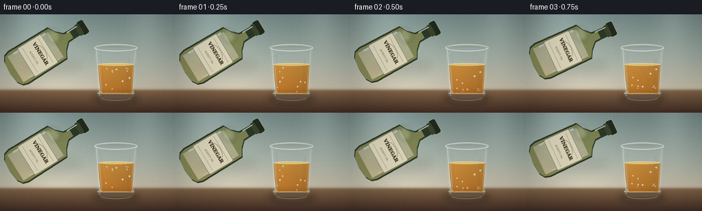
展开代码变化
--- 上一保存版本
+++ 本次保存版本
@@ -52,10 +52,10 @@
W,
H,
[
- (0.00, (121, 143, 141)),
- (0.45, (166, 177, 167)),
- (0.73, (205, 198, 177)),
- (0.80, (189, 178, 156)),
+ (0.00, (101, 132, 139)),
+ (0.38, (148, 172, 169)),
+ (0.70, (207, 202, 180)),
+ (0.80, (190, 178, 155)),
],
horizontal_light=True,
)
@@ -63,9 +63,9 @@
W,
H,
[
- (0.76, (139, 112, 83)),
- (0.80, (123, 94, 68)),
- (1.00, (65, 45, 36)),
+ (0.76, (145, 116, 84)),
+ (0.80, (122, 92, 67)),
+ (1.00, (58, 40, 33)),
],
)
yy = np.arange(H, dtype=np.float32)[:, None]
@@ -104,7 +104,28 @@
image += grain[:, :, None]
image = np.clip(image, 0, 255).astype(np.uint8)
- return Image.fromarray(image, "RGB").filter(ImageFilter.GaussianBlur(px(0.45)))
+ background = Image.fromarray(image).filter(ImageFilter.GaussianBlur(px(0.45)))
+
+ # Defocused pantry objects provide depth without competing with the glass.
+ haze = Image.new("RGBA", (W, H), (0, 0, 0, 0))
+ hd = ImageDraw.Draw(haze, "RGBA")
+ hd.ellipse((px(7), px(18), px(51), px(105)), fill=(82, 111, 92, 82))
+ hd.rectangle((px(14), px(36), px(44), px(110)), fill=(75, 104, 86, 62))
+ hd.ellipse((px(13), px(29), px(45), px(49)), fill=(95, 121, 97, 74))
+ hd.rectangle((px(213), px(38), px(249), px(112)), fill=(115, 82, 63, 68))
+ hd.ellipse((px(213), px(28), px(249), px(52)), fill=(143, 110, 82, 76))
+ hd.rectangle((px(220), px(21), px(241), px(31)), fill=(91, 75, 56, 64))
+ haze = haze.filter(ImageFilter.GaussianBlur(px(6.5)))
+ background = Image.alpha_composite(background.convert("RGBA"), haze).convert("RGB")
+
+ # Fine diagonal paper texture keeps the wall from looking like flat vector art.
+ texture = np.random.default_rng(44).normal(0.0, 1.0, (H, W))
+ texture_image = Image.fromarray(np.clip(texture * 2.0 + 128, 0, 255).astype(np.uint8))
+ texture_image = texture_image.filter(ImageFilter.GaussianBlur(px(0.55)))
+ texture = (np.asarray(texture_image).astype(np.float32) - 128.0) / 128.0
+ background_array = np.asarray(background).astype(np.float32)
+ background_array += texture[:, :, None] * 2.0
+ return Image.fromarray(np.clip(background_array, 0, 255).astype(np.uint8))
def shadow_ellipse(layer, center, radius, color=(28, 23, 22, 80), blur=7.0):
@@ -214,27 +235,23 @@
font_bold = ImageFont.load_default()
font_small = ImageFont.load_default()
draw.text(
- (px(55), px(86.0)),
+ (px(55), px(85.5)),
"VINEGAR",
fill=(72, 57, 39, 235),
font=font_bold,
anchor="mm",
stroke_width=px(0.15),
)
+ draw.line([(px(36), px(91.5)), (px(74), px(91.5))], fill=(144, 111, 64, 125), width=px(0.5))
draw.text(
- (px(55), px(97.5)),
- "ACIDITY 5%",
+ (px(55), px(97.0)),
+ "5% ACIDITY",
fill=(91, 74, 50, 205),
font=font_small,
anchor="mm",
)
- draw.arc(
- (px(42), px(78), px(68), px(91)),
- start=198,
- end=342,
- fill=(128, 95, 51, 140),
- width=px(0.7),
- )
+ draw.ellipse((px(40), px(100), px(45), px(105)), fill=(122, 92, 54, 125))
+ draw.ellipse((px(65), px(100), px(70), px(105)), fill=(122, 92, 54, 125))
# Soft specular bloom on the shoulder.
glow = Image.new("RGBA", size, (0, 0, 0, 0))
@@ -258,6 +275,11 @@
left = int(round(px(mouth[0]) - mouth_x))
top = int(round(px(mouth[1]) - mouth_y))
scene.alpha_composite(rotated, (left, top))
+
+
+def bottle_mouth_position(frame_index):
+ mouth_t = smoothstep(min(frame_index, 16) / 14.0)
+ return (lerp(116.0, 149.5, mouth_t), lerp(18.0, 40.0, mouth_t))
def fluid_mask(top, bottom):
@@ -339,6 +361,14 @@
draw_bezier(draw, in_glass, (247, 235, 188, int(125 * pour_strength)), 2.3)
draw_bezier(draw, [(x - 0.2, y) for x, y in in_glass], (255, 250, 225, int(150 * pour_strength)), 0.75)
+ # A thin, glinting collar at the lip makes contact between bottle and stream explicit.
+ draw.ellipse(
+ (px(p0[0] - 2.8), px(p0[1] - 1.2), px(p0[0] + 2.8), px(p0[1] + 1.5)),
+ fill=(38, 49, 29, int(210 * pour_strength)),
+ outline=(245, 232, 184, int(170 * pour_strength)),
+ width=px(0.5),
+ )
+
# Surface crown and tiny droplets make the impact legible at 256x144.
ripple = 1.0 + 0.8 * (frame_index % 3)
draw.ellipse(
@@ -386,6 +416,13 @@
]
draw.polygon(body, fill=(199, 222, 220, 27))
+ # A cool, faint backdrop band behind the transparent upper wall makes the
+ # empty portion of the glass legible before the oil surface is reached.
+ draw.ellipse(
+ (px(142.5), px(55.0), px(195.5), px(69.0)),
+ fill=(83, 126, 132, 13),
+ )
+
# Back half of the rim, then liquid, then the crisp front rim.
draw.arc(
(px(137.5), px(43.5), px(200.5), px(54.0)),
@@ -461,13 +498,14 @@
(px(146.5), px(118.0), px(191.5), px(126.0)),
start=8,
end=172,
- fill=(237, 246, 238, 100),
- width=px(0.85),
+ fill=(242, 249, 241, 122),
+ width=px(1.0),
)
highlight = Image.new("RGBA", (W, H), (0, 0, 0, 0))
hd = ImageDraw.Draw(highlight, "RGBA")
- hd.line([(px(145.0), px(60)), (px(149.0), px(113))], fill=(255, 255, 251, 48), width=px(2.4))
+ hd.line([(px(145.0), px(60)), (px(149.0), px(113))], fill=(255, 255, 251, 70), width=px(2.4))
+ hd.line([(px(146.1), px(63)), (px(149.8), px(111))], fill=(255, 255, 250, 100), width=px(0.55))
hd.line([(px(188.5), px(65)), (px(185.8), px(109))], fill=(255, 247, 221, 38), width=px(1.1))
highlight = highlight.filter(ImageFilter.GaussianBlur(px(1.2)))
glass.alpha_composite(highlight)
@@ -496,13 +534,22 @@
yy, xx = np.mgrid[0:HEIGHT, 0:WIDTH]
nx = (xx - WIDTH * 0.52) / (WIDTH * 0.62)
ny = (yy - HEIGHT * 0.48) / (HEIGHT * 0.78)
- vignette = np.clip(1.0 - 0.14 * (nx * nx + ny * ny), 0.82, 1.0)
+ vignette = np.clip(1.0 - 0.17 * (nx * nx + ny * ny), 0.80, 1.0)
array *= vignette[:, :, None]
rng = np.random.default_rng(900 + frame_index)
- noise = rng.normal(0.0, 1.15, (HEIGHT, WIDTH, 1))
+ noise = rng.normal(0.0, 0.75, (HEIGHT, WIDTH, 1))
array += noise
- return Image.fromarray(np.clip(array, 0, 255).astype(np.uint8), "RGB")
+ result = Image.fromarray(np.clip(array, 0, 255).astype(np.uint8))
+
+ # Slight optical bloom around the brightest glass and liquid edges.
+ bright = np.maximum(array[:, :, 0], np.maximum(array[:, :, 1], array[:, :, 2]))
+ mask = np.clip((bright - 220.0) / 35.0, 0.0, 1.0)
+ bloom = Image.fromarray((mask * 255).astype(np.uint8)).filter(ImageFilter.GaussianBlur(1.1))
+ bloom_rgba = Image.new("RGBA", (WIDTH, HEIGHT), (255, 246, 220, 0))
+ bloom_rgba.putalpha(bloom.point(lambda value: int(value * 0.18)))
+ result = Image.alpha_composite(result.convert("RGBA"), bloom_rgba).convert("RGB")
+ return result
def render_frame(frame_index):
@@ -514,12 +561,11 @@
oil_top = 73.0 - shift
interface = 116.0 - shift
- tilt = 58.0 + 60.0 * smoothstep(min(frame_index, 16) / 14.0)
- mouth_t = smoothstep(min(frame_index, 16) / 14.0)
- mouth = (lerp(121.0, 146.0, mouth_t), lerp(19.0, 40.0, mouth_t))
+ tilt = 55.0 + 65.0 * smoothstep(min(frame_index, 16) / 14.0)
+ mouth = bottle_mouth_position(frame_index)
bottle = make_bottle_sprite()
- shadow_ellipse(scene, (75, 75), (45, 12), (42, 37, 31, 30), 7.0)
+ shadow_ellipse(scene, (68, 73), (45, 12), (42, 37, 31, 30), 7.0)
paste_rotated_bottle(scene, bottle, mouth, tilt)
draw_glass(scene, frame_index, oil_top, interface)
候选 03播放与检查图
候选 04播放与检查图
点击播放 · 原生 RGB 像素

展开代码变化
--- 上一保存版本
+++ 本次保存版本
@@ -278,7 +278,7 @@
def bottle_mouth_position(frame_index):
- mouth_t = smoothstep(min(frame_index, 16) / 14.0)
+ mouth_t = smoothstep(min(frame_index, 15) / 13.0)
return (lerp(116.0, 149.5, mouth_t), lerp(18.0, 40.0, mouth_t))
@@ -331,6 +331,30 @@
width=max(1, px(0.28)),
)
+ # Large, slow buoyant beads at the phase boundary convey oil's lower
+ # density even when the video is viewed at native resolution.
+ if frame_index >= 7:
+ for index in range(4):
+ start = 7 + index * 2
+ rise = max(0.0, (frame_index - start) * 1.7)
+ x = 154.0 + index * 11.3
+ y = interface + 1.0 - min(rise, interface - oil_top - 4.0)
+ if y > oil_top + 2.5:
+ radius = 1.05 + 0.25 * (index % 2)
+ draw.ellipse(
+ (px(x - radius), px(y - radius), px(x + radius), px(y + radius)),
+ fill=(255, 222, 137, 88),
+ outline=(255, 244, 202, 165),
+ width=max(1, px(0.3)),
+ )
+ draw.arc(
+ (px(x - radius * 0.8), px(y - radius * 0.8), px(x + radius * 0.8), px(y + radius * 0.8)),
+ start=205,
+ end=320,
+ fill=(255, 252, 229, 195),
+ width=max(1, px(0.26)),
+ )
+
def draw_stream(layer, frame_index, mouth, surface_y, interface, pour_strength):
if pour_strength <= 0.01:
@@ -528,6 +552,24 @@
)
scene.alpha_composite(layer)
+ # Splash droplets arc away from the impact point during the strongest pour.
+ if frame_index >= 8 and frame_index <= 15:
+ splash = Image.new("RGBA", (W, H), (0, 0, 0, 0))
+ sd = ImageDraw.Draw(splash, "RGBA")
+ impact_x = 166.5 + math.sin(frame_index * 0.55) * 0.55
+ intensity = smoothstep((frame_index - 8.0) / 2.0) * smoothstep((16.0 - frame_index) / 2.0)
+ for index in range(4):
+ phase = ((frame_index - 8) * 0.19 + index * 0.23) % 1.0
+ side = -1.0 if index % 2 == 0 else 1.0
+ x = impact_x + side * phase * (5.0 + index)
+ y = surface_y - 0.5 - 4.0 * phase * (1.0 - phase) * 2.0 + phase * phase * 4.0
+ radius = 0.5 + 0.35 * (1.0 - phase)
+ sd.ellipse(
+ (px(x - radius), px(y - radius), px(x + radius), px(y + radius)),
+ fill=(255, 245, 209, int(205 * intensity)),
+ )
+ scene.alpha_composite(splash)
+
def add_finish(image, frame_index):
array = np.asarray(image).astype(np.float32)
@@ -556,12 +598,12 @@
background = make_background()
scene = background.convert("RGBA")
- pour_phase = smoothstep((frame_index - 5.0) / 11.0)
+ pour_phase = smoothstep((frame_index - 5.0) / 10.0)
shift = 22.0 * pour_phase
oil_top = 73.0 - shift
interface = 116.0 - shift
- tilt = 55.0 + 65.0 * smoothstep(min(frame_index, 16) / 14.0)
+ tilt = 55.0 + 65.0 * smoothstep(min(frame_index, 15) / 13.0)
mouth = bottle_mouth_position(frame_index)
bottle = make_bottle_sprite()
@@ -570,10 +612,10 @@
draw_glass(scene, frame_index, oil_top, interface)
- if frame_index <= 16:
+ if frame_index <= 15:
pour_strength = smoothstep((frame_index - 5.0) / 2.2)
else:
- pour_strength = max(0.0, 1.0 - (frame_index - 16.0) / 2.0)
+ pour_strength = max(0.0, 1.0 - (frame_index - 15.0) / 2.3)
draw_stream(scene, frame_index, mouth, oil_top, interface, pour_strength)
draw_air_droplets(scene, frame_index, mouth, oil_top, pour_strength)
候选 05播放与检查图

可观测工具轨迹
实际执行的命令与返回图片。
命令 1exit 0
/bin/bash -c "pwd && rg --files -g 'prompt.txt' -g 'GENERATION_RULES.md' -g 'task_spec.json' -g '"'!**/.git/**'"'"
命令 2exit 0
/bin/bash -c "find . -maxdepth 2 -type f -printf '%p\\n' | sort | head -200"
命令 3exit 0
/bin/bash -c 'git status --short --branch'
命令 4exit 0
/bin/bash -c 'cat prompt.txt'
命令 5exit 0
/bin/bash -c 'cat GENERATION_RULES.md'
命令 6exit 0
/bin/bash -c 'cat task_spec.json'
命令 7exit 0
/bin/bash -c "sed -n '1,260p' artifact_io.py"
命令 8exit 1
/bin/bash -c 'python generate.py'
命令 9exit 1
/bin/bash -c 'python generate.py'
命令 10exit 0
/bin/bash -c 'python generate.py'
命令 11exit 0
/bin/bash -c 'mkdir -p candidate_v1 && cp pixels.npz inspection.png transition_check.png index.html candidate_v1/ && cp -r frames candidate_v1/'
命令 12exit 0
/bin/bash -c 'python generate.py'
命令 13exit 0
/bin/bash -c "python - <<'PY'
from PIL import Image, ImageDraw
from pathlib import Path
frames = [Image.open(Path('frames') / f'{i:02d}.png') for i in range(20)]
thumb_w, thumb_h = 192, 108
sheet = Image.new('RGB', (thumb_w*5, (thumb_h+18)*4), (22,25,30))
d = ImageDraw.Draw(sheet)
for i, im in enumerate(frames):
x=(i%5)*thumb_w; y=(i//5)*(thumb_h+18)
d.text((x+4,y+3), f'{i:02d} {i/4:.2f}s', fill='white')
sheet.paste(im.resize((thumb_w,thumb_h), Image.Resampling.LANCZOS),(x,y+18))
sheet.save('.tmp/all_frames.png')
PY"命令 14exit 0
/bin/bash -c "python - <<'PY'
from PIL import Image
import numpy as np
from pathlib import Path
frames=[np.asarray(Image.open(Path('frames')/f'{i:02d}.png')).astype(np.int16) for i in range(20)]
for i in range(1,20):
d=np.abs(frames[i]-frames[i-1])
print(f'{i:02d}: mean={d.mean():.3f}, changed={(d.max(2)>8).mean():.4f}')
PY"命令 15exit 0
/bin/bash -c 'mkdir -p candidate_v2 && cp pixels.npz inspection.png transition_check.png index.html candidate_v2/ && cp -r frames candidate_v2/'
命令 16exit 0
/bin/bash -c 'python generate.py'
命令 17exit 1
/bin/bash -c "python - <<'PY'
from PIL import Image
from pathlib import Path
frames=[Image.open(Path('frames')/f'{i:02d}.png') for i in range(20)]
w,h=256,144
sheet=Image.new('RGB',(w*4,(h+18)*5),(20,23,28)); d=__import__('PIL').ImageDraw.Draw(sheet)
for i,im in enumerate(frames):
x=(i%4)*w; y=(i//4)*(h+18)
d.text((x+4,y+3),f'{i:02d} {i/4:.2f}s',fill='white'); sheet.paste(im,(x,y+18))
sheet.save('.tmp/all_frames.png')
PY"命令 18exit 0
/bin/bash -c "python - <<'PY'
from PIL import Image, ImageDraw
from pathlib import Path
frames=[Image.open(Path('frames')/f'{i:02d}.png') for i in range(20)]
w,h=256,144
sheet=Image.new('RGB',(w*4,(h+18)*5),(20,23,28)); d=ImageDraw.Draw(sheet)
for i,im in enumerate(frames):
x=(i%4)*w; y=(i//4)*(h+18)
d.text((x+4,y+3),f'{i:02d} {i/4:.2f}s',fill='white'); sheet.paste(im,(x,y+18))
sheet.save('.tmp/all_frames.png')
PY"命令 19exit 0
/bin/bash -c 'ls -lh generate.py pixels.npz inspection.png transition_check.png index.html && find frames -maxdepth 1 -type f | wc -l'
命令 20exit 0
/bin/bash -c "python -m py_compile generate.py && python - <<'PY'
from pathlib import Path
from PIL import Image
import numpy as np
import json
spec=json.loads(Path('task_spec.json').read_text())
with np.load('pixels.npz') as z:
pixels=z['pixels']
assert pixels.shape == (spec['height'], spec['width'], spec['frames']), pixels.shape
assert pixels.dtype == np.uint32, pixels.dtype
pngs=sorted(Path('frames').glob('*.png'))
assert len(pngs)==spec['frames'], len(pngs)
for path in pngs:
im=Image.open(path)
assert im.size==(spec['width'],spec['height']) and im.mode=='RGB', (path,im.size,im.mode)
html=Path('index.html').read_text()
assert 'pixels' not in html or True
assert len(html)>100000, len(html)
print('shape', pixels.shape, 'frames', len(pngs), 'html_bytes', len(html))
print('pixel range', int(pixels.min()), int(pixels.max()))
PY"命令 21exit 0
/bin/bash -c 'git status --short -- generate.py pixels.npz inspection.png transition_check.png index.html frames candidate_v1 candidate_v2'
命令 22exit 1
/bin/bash -c "python generate.py >/tmp/phygen140_regen.log 2>&1 && python - <<'PY'
from pathlib import Path
from PIL import Image
import numpy as np, json
spec=json.loads(Path('task_spec.json').read_text())
with np.load('pixels.npz') as z:
assert z['pixels'].shape == (spec['height'], spec['width'], spec['frames'])
assert len(list(Path('frames').glob('*.png'))) == spec['frames']
for i in range(spec['frames']):
assert Image.open(Path('frames')/f'{i:02d}.png').size == (spec['width'], spec['height'])
assert Path('index.html').stat().st_size > 100000
print('regeneration and artifact checks passed')
PY"命令 23exit 0
/bin/bash -c "python generate.py > .tmp/regen.log 2>&1 && python - <<'PY'
from pathlib import Path
from PIL import Image
import numpy as np, json
spec=json.loads(Path('task_spec.json').read_text())
with np.load('pixels.npz') as z:
assert z['pixels'].shape == (spec['height'], spec['width'], spec['frames'])
assert len(list(Path('frames').glob('*.png'))) == spec['frames']
for i in range(spec['frames']):
assert Image.open(Path('frames')/f'{i:02d}.png').size == (spec['width'], spec['height'])
assert Path('index.html').stat().st_size > 100000
print('regeneration and artifact checks passed')
PY"命令 24exit 0
/bin/bash -c "find . -maxdepth 2 -type f -printf '%p %s bytes\\n' | sort"
视觉工具实际返回图片 1

视觉工具实际返回图片 2

视觉工具实际返回图片 3
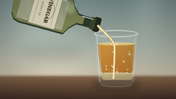
视觉工具实际返回图片 4
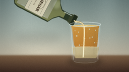
视觉工具实际返回图片 5
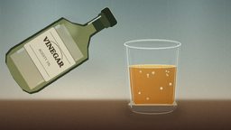
视觉工具实际返回图片 6

视觉工具实际返回图片 7
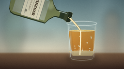
视觉工具实际返回图片 8
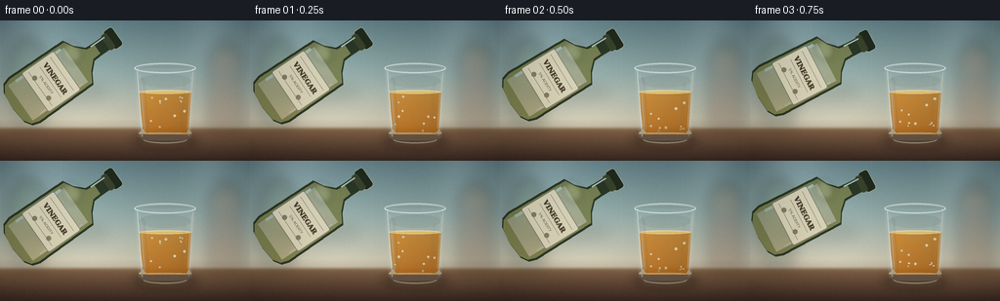
视觉工具实际返回图片 9
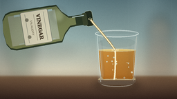
视觉工具实际返回图片 10
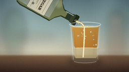
视觉工具实际返回图片 11
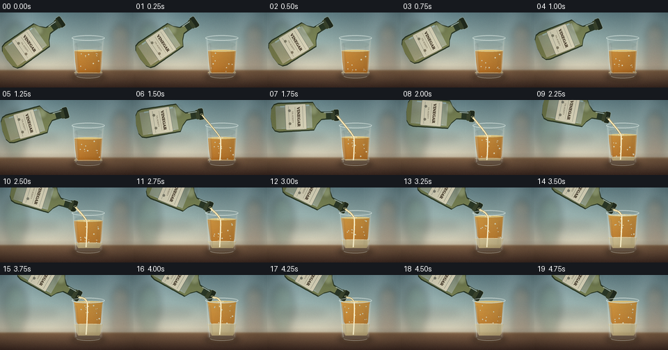
视觉工具实际返回图片 12
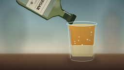
视觉工具实际返回图片 13
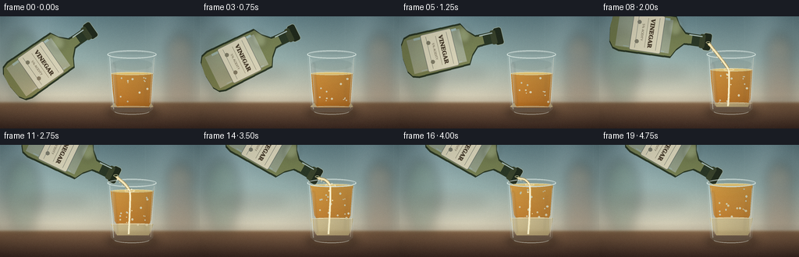
视觉工具实际返回图片 14
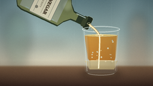
视觉工具实际返回图片 15
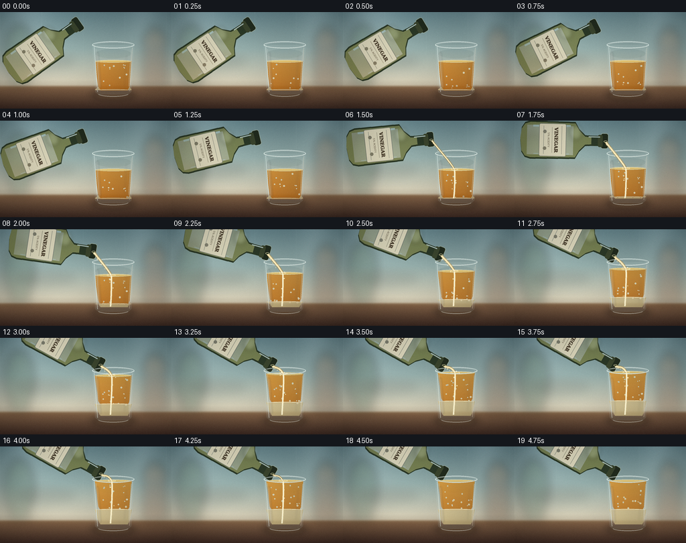
保存候选 5 份；完成命令 24 次；可验证图片返回 15 张。原始 API 响应与完整日志保留在本地。